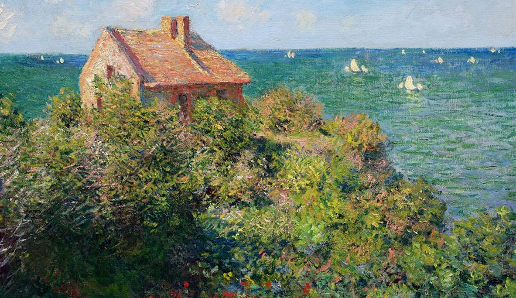

Nessa parte, iremos contar um pouco da linha cronologica/biografia do pintor Claude Monet :3
A cronologia de Monet foi retirada do encarte da exposição "A ecologia de Monet" do MASP.
˚₊· ͟͟͞͞➳❥ 1840: Monet nasce em Paris, no dia 14 de novembro. Por volta dos cinco anos de idade, muda-se com a família para a região costeira da Normandia, ao norte da França.
˚₊· ͟͟͞͞➳❥ 1861: É convocado para o exército e enviado a Argélia. Tendo servido em um período sem grandes conflitos, Monet se recordaria, décadas mais tarde, da linda luminosidade da região. Retorna ao Havre após um ano, acometido por uma febre tifoide.
˚₊· ͟͟͞͞➳❥ 1871: Durante a guerra franco-prussiana, exilase em Londres com sua companheira, Camille, e o filho. Após o fim da guerra, se estabelece em Argenteuil, uma cidade nos arredores de Paris que passa por um processo de industrialização.
˚₊· ͟͟͞͞➳❥ 1874: Um grupo de artistas, insatisfeito com os critérios de seleção para o Salão de Paris, expõe em conjunto pela primeira vez. Eles passam a ser conhecidos como impressionistas em referência à obra de Monet, Impressão, sol nascente.
˚₊· ͟͟͞͞➳❥ 1878: Devido a problemas financeiros, os Monet passam a viver com a família de Ernest e Alice Hoschedé em Vétheuil, às margens do Sena.
˚₊· ͟͟͞͞➳❥ 1879: Camille Monet falece. Claude e seus filhos continuam vivendo com Alice e as crianças da família Hoschedé. Nesse ano, um inverno severo, seguido de um degelo abrupto, causa um alagamento histórico do rio Sena, retratado em algumas obras de Monet.
˚₊· ͟͟͞͞➳❥ 1881: Monet, Alice e os filhos de ambos se mudam para Poissy, uma comuna próxima a Paris. Monet não se adapta à região e, em 1883, buscando se distanciar da capital francesa, parte com a família para Giverny, também às margens do Sena.
˚₊· ͟͟͞͞➳❥ déc. 1880: Monet realiza diversas viagens pela França, sobretudo pela costa da Normandia, passando ainda pela Bretanha e pelo Mediterrâneo. Também viaja para a Holanda e a Itália. Fugindo das vistas mais procuradas por turistas, suas paisagens se tornam mais originais.
˚₊· ͟͟͞͞➳❥ 1889: Em visita à Exposição Universal de Paris, Monet conhece as ninfeias coloridas recémcriadas pelo botânico Joseph Bory LatourMarliac a partir da ninfeia-branca, a única existente até então. Monet as adquire para seu jardim aquático de Giverny.
˚₊· ͟͟͞͞➳❥ déc. 1890: Monet começa a pintar mais consistentemente em séries, partindo de composições quase idênticas para explorar diferentes efeitos atmosféricos.
˚₊· ͟͟͞͞➳❥ 1890: Monet compra a casa na qual morava em Giverny. A partir de então, passa a se dedicar cada vez mais ao seu jardim, que se torna o tema mais recorrente em suas pinturas até o fim da vida.
˚₊· ͟͟͞͞➳❥ 1893: Adquire um terreno adjacente a sua propriedade, por onde passava o Ru, um braço do rio Epte, afluente do Sena. Monet desvia parte de seu curso para formar uma lagoa na qual pudesse cultivar suas ninfeias e outras plantas aquáticas.
˚₊· ͟͟͞͞➳❥ 1899-1901: Monet realiza longas viagens para Londres, determinado a representar, sob diferentes efeitos atmosféricos, o rio Tâmisa e a névoa característica do clima úmido londrino, que se somava à fumaça liberada pelas fábricas locais.
˚₊· ͟͟͞͞➳❥ 1918: No dia após a assinatura do armistício da Primeira Guerra Mundial, Monet começa a trabalhar em um grande projeto – painéis enormes com suas pinturas de ninfeias –, que seria doado ao Estado em comemoração à vitória na guerra.
˚₊· ͟͟͞͞➳❥ 1923: A visão de Monet se deteriorava desde a década anterior com o avanço da catarata, afetando sua produção. Após vários tratamentos experimentais, decide se submeter à cirurgia para recuperar parcialmente a sua percepção das cores.
˚₊· ͟͟͞͞➳❥ 1926: Monet falece no dia 5 de dezembro em Giverny.
˚₊· ͟͟͞͞➳❥ 1927: Em 27 de maio, o grande projeto de Monet é inaugurado, composto de 22 enormes painéis de ninfeias doados à nação francesa e expostos até hoje no Musée de l’Orangerie, em Paris.
˚₊· ͟͟͞͞➳❥ Os Jardins de Monet são um local em Giverny, França, que o artista criou e que inspirou muitas das suas pinturas, especialmente as da série dos nenúfares. Os jardins dividem-se em dois: o Clos Normand, um jardim florido em frente à casa do artista, e o Jardin d'Eau, um jardim de inspiração oriental com um lago de nenúfares e uma famosa ponte japonesa. O local abre ao público de abril a outubro.
✎ Duas áreas principais:
╰┈➤ Clos Normand: É o jardim principal, em frente à casa de Monet, caracterizado pela explosão de flores de diferentes tamanhos e cores. A alameda central é ladeada por capuchinhas.
╰┈➤ Jardin d'Eau: Um jardim de inspiração japonesa com um lago de nenúfares, salgueiros chorões, bambus e a icónica ponte verde, inspirada nas estampas japonesas.
Esse vídeo mostra o jardim por completo! Créditos do vídeo ao seu criador!!